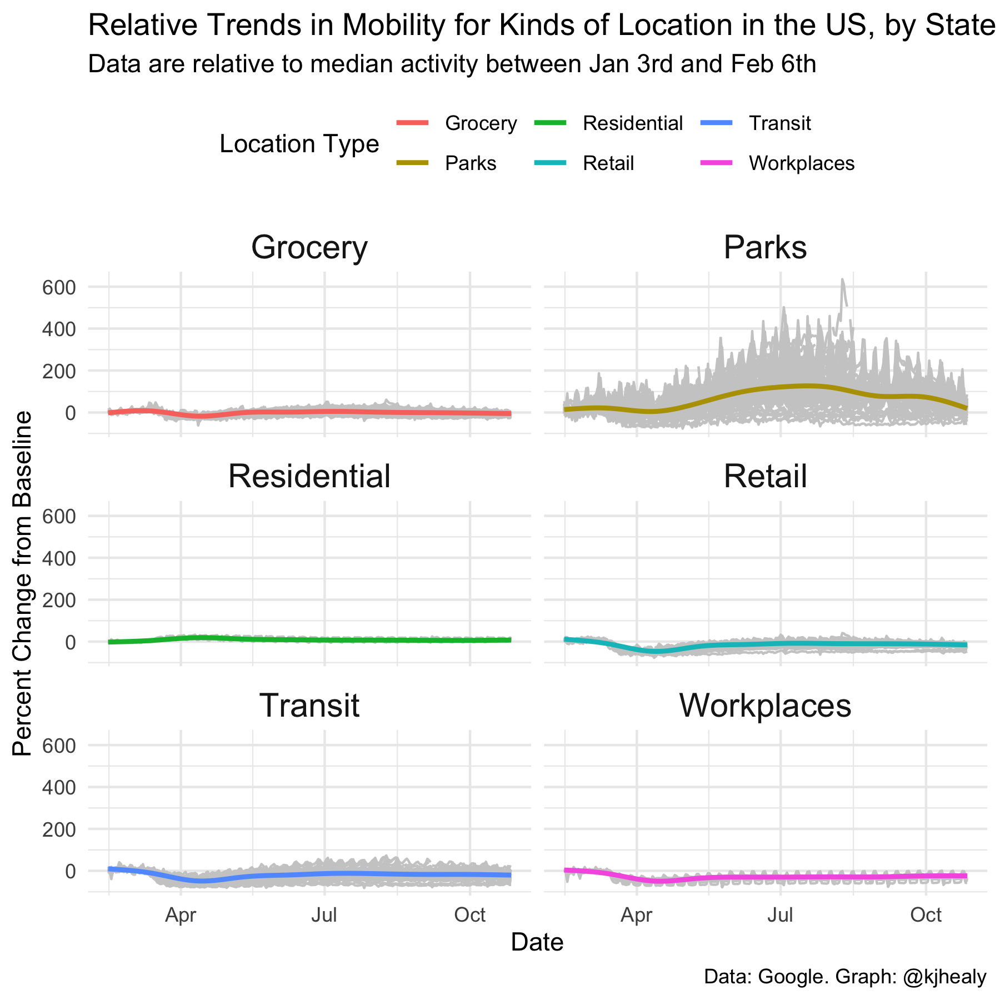

Loading the Package
The covmobility package aims to make COVID-19-related data from Apple and Google easily accessible to users of R. Once the package is installed, load it in the usual way:
library(tidyverse) #> ── Attaching packages ─────────────────────────────────────── tidyverse 1.3.0 ── #> ✔ ggplot2 3.3.2 ✔ purrr 0.3.4 #> ✔ tibble 3.0.4 ✔ dplyr 1.0.2 #> ✔ tidyr 1.1.2 ✔ stringr 1.4.0 #> ✔ readr 1.4.0 ✔ forcats 0.5.0 #> ── Conflicts ────────────────────────────────────────── tidyverse_conflicts() ── #> ✖ dplyr::filter() masks stats::filter() #> ✖ dplyr::lag() masks stats::lag() library(covmobility) library(ggforce)
Loading the package makes two main datasets available for use. Because the data are in tibbles, the use of the tidyverse suite of packages is strongly recommended, though it is not required. If use the data objects as dataframes (i.e., without loading the tidyverse packages) you will need to re-encode some variables, most importantly date and date-time columns, for them to behave as expected.
Exploring the Data
Individual datasets are documented on their help pages. The documentation includes details on properly citing the source of the data and, in some cases, the terms of use under which it is provided.
Caveat Emptor
The data are provided as-is. More information about collection methods, scope, limits, and possible sources of error in the data can be found in the documentation provided by their respective sources.
Apple’s Mobility Data
Apple has made aggregated data available on relative trends in use of its Maps data across a range of cities, regions, and countries. Data show relative volume of directions requests per country/region or city compared to a baseline volume on January 13th, 2020. Apple defines the day as midnight-to-midnight, Pacific time. Cities represent usage in greater metropolitan areas and are stably defined during this period. In many countries/regions and cities, relative volume has increased since January 13th, consistent with normal, seasonal usage of Apple Maps. Day of week effects are important to normalize as you use this data. Data that is sent from users’ devices to the Apple Maps service is associated with random, rotating identifiers so Apple does not have a profile of individual movements and searches. Apple Maps has no demographic information about its users, and so cannot make any statements about the representativeness of its usage against the overall population.
apple_mobility #> # A tibble: 1,351,008 x 8 #> geo_type region transportation_… alternative_name sub_region country #> <chr> <chr> <chr> <chr> <chr> <chr> #> 1 country… Alban… driving <NA> <NA> <NA> #> 2 country… Alban… driving <NA> <NA> <NA> #> 3 country… Alban… driving <NA> <NA> <NA> #> 4 country… Alban… driving <NA> <NA> <NA> #> 5 country… Alban… driving <NA> <NA> <NA> #> 6 country… Alban… driving <NA> <NA> <NA> #> 7 country… Alban… driving <NA> <NA> <NA> #> 8 country… Alban… driving <NA> <NA> <NA> #> 9 country… Alban… driving <NA> <NA> <NA> #> 10 country… Alban… driving <NA> <NA> <NA> #> # … with 1,350,998 more rows, and 2 more variables: date <date>, score <dbl>
vec_brks <- c(-50, 0, 50) vec_labs <- vec_brks + 100
apple_cities <- apple_mobility %>% filter(geo_type == "city", transportation_type == "driving") %>% mutate(over_under = score < 100, score = score - 100) for(i in 1:5){ print( ggplot(data = apple_cities, mapping = aes(x = date, y = score, group = region, color = over_under)) + geom_hline(yintercept = 0, color = "gray40") + geom_col() + scale_y_continuous(breaks = vec_brks, labels = vec_labs) + scale_color_manual(values = c("firebrick", "steelblue")) + facet_wrap_paginate(~ region, nrow = 5, ncol = 6, page = i) + guides(color = FALSE) + labs(x = "Date", y = "Relative Mobility", title = "Relative Trends in Apple Maps Usage for Driving, Selected Cities", subtitle = "Data are indexed to 100 for each city's usage on January 13th 2020", caption = "Data: Apple. Graph: @kjhealy") + theme_minimal() ) } #> Warning: Removed 598 rows containing missing values (position_stack).

#> Warning: Removed 598 rows containing missing values (position_stack).#> Warning: Removed 598 rows containing missing values (position_stack).
#> Warning: Removed 598 rows containing missing values (position_stack).#> Warning: Removed 598 rows containing missing values (position_stack).Google’s Mobility Reports
These Community Mobility Reports aim to provide insights into what has changed in response to policies aimed at combating COVID-19. The reports chart movement trends over time by geography, across different categories of places such as retail and recreation, groceries and pharmacies, parks, transit stations, workplaces, and residential. Each Community Mobility Report dataset is presented by location and highlights the percent change in visits to places like grocery stores and parks within a geographic area. These datasets show how visits and length of stay at different places change compared to a baseline. Changes for each day are compared to a baseline value for that day of the week:
- The baseline is the median value, for the corresponding day of the week, during the 5-week period Jan 3–Feb 6, 2020.
- The datasets show trends over several months.
- What data is included in the calculation depends on user settings, connectivity, and whether it meets Google’s privacy threshold. If the privacy threshold isn’t met (when somewhere isn’t busy enough to ensure anonymity) no change is shown for the day.
google_mobility #> # A tibble: 16,849,620 x 10 #> country_region_… country_region sub_region_1 sub_region_2 metro_area #> <chr> <chr> <chr> <chr> <chr> #> 1 AE United Arab E… <NA> <NA> <NA> #> 2 AE United Arab E… <NA> <NA> <NA> #> 3 AE United Arab E… <NA> <NA> <NA> #> 4 AE United Arab E… <NA> <NA> <NA> #> 5 AE United Arab E… <NA> <NA> <NA> #> 6 AE United Arab E… <NA> <NA> <NA> #> 7 AE United Arab E… <NA> <NA> <NA> #> 8 AE United Arab E… <NA> <NA> <NA> #> 9 AE United Arab E… <NA> <NA> <NA> #> 10 AE United Arab E… <NA> <NA> <NA> #> # … with 16,849,610 more rows, and 5 more variables: iso3166_2 <chr>, #> # census_fips_code <chr>, date <date>, type <chr>, pct_diff <int>
google_mobility %>% filter(country_region_code == "US", !is.na(sub_region_1), is.na(sub_region_2)) %>% mutate(type = tools::toTitleCase(type)) %>% ggplot(mapping = aes(x = date, y = pct_diff, group = sub_region_1)) + geom_line(size = 0.5, color = "gray80") + geom_smooth(aes(color = type, group = 1), se = FALSE) + facet_wrap(~ type, ncol = 2) + labs(x = "Date", y = "Percent Change from Baseline", title = "Relative Trends in Mobility for Kinds of Location in the US, by State", subtitle = "Data are relative to median activity between Jan 3rd and Feb 6th", color = "Location Type", caption = "Data: Google. Graph: @kjhealy") + theme_minimal() + theme(legend.position = "top", strip.text = element_text(size = rel(1.3))) #> `geom_smooth()` using method = 'gam' and formula 'y ~ s(x, bs = "cs")' #> Warning: Removed 575 rows containing non-finite values (stat_smooth).
